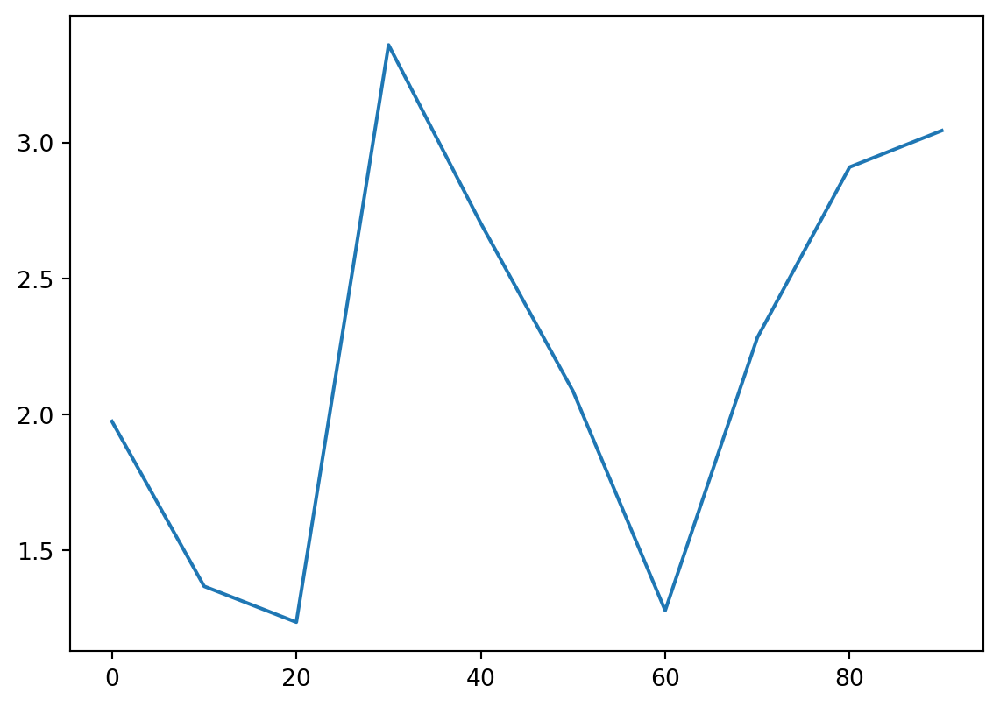
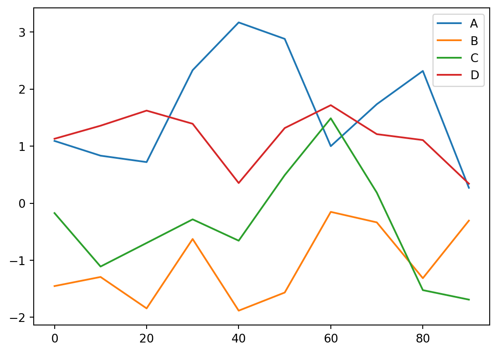
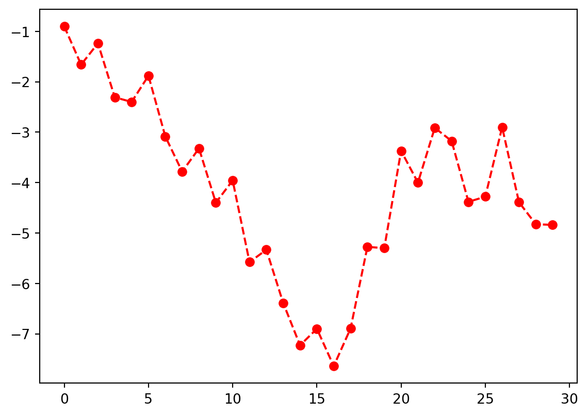
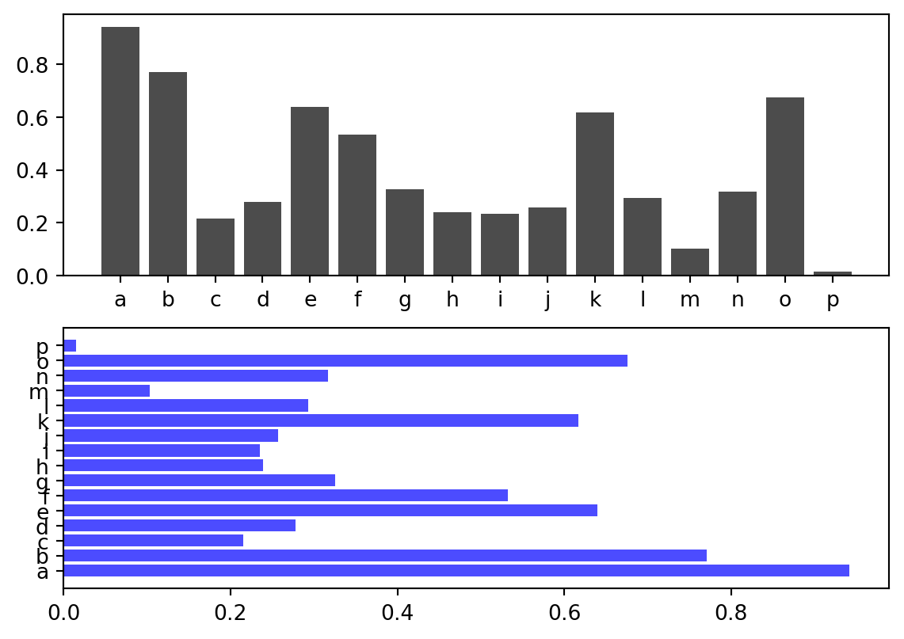
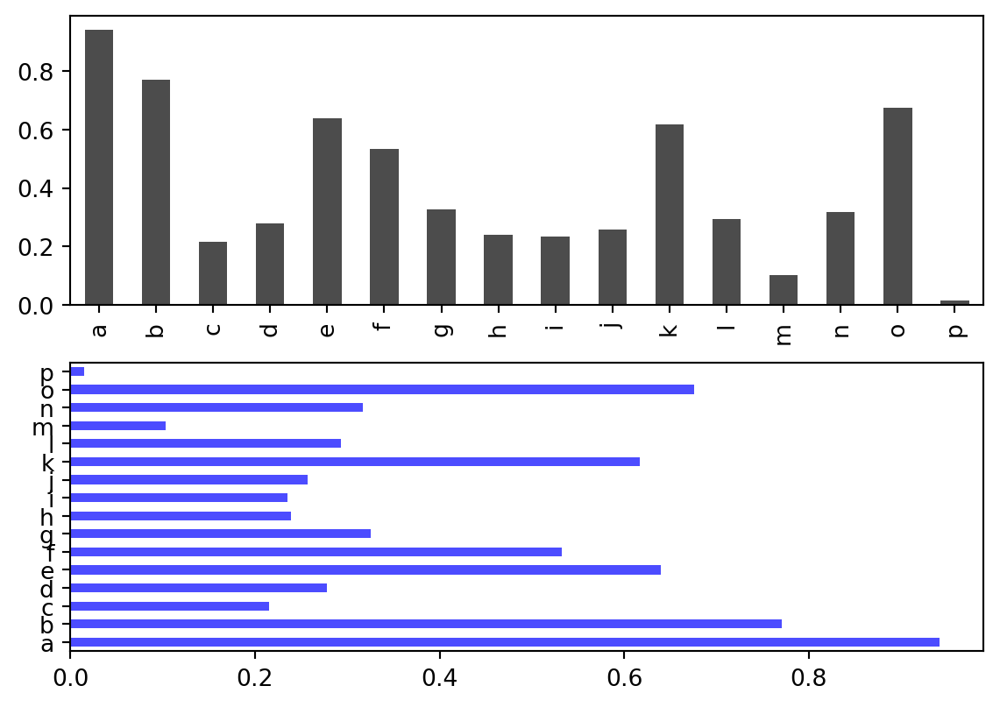
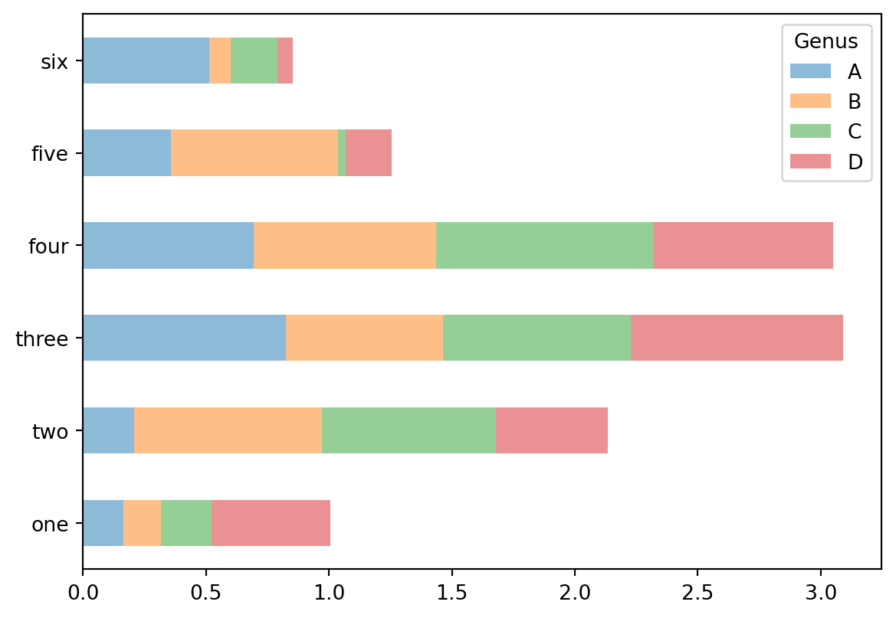
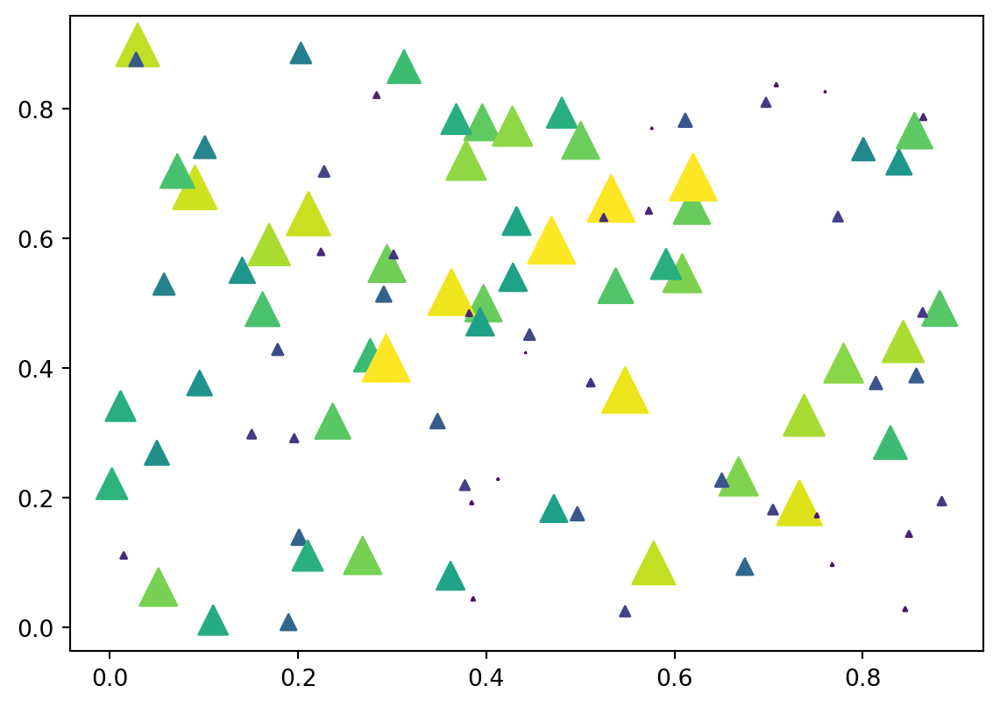
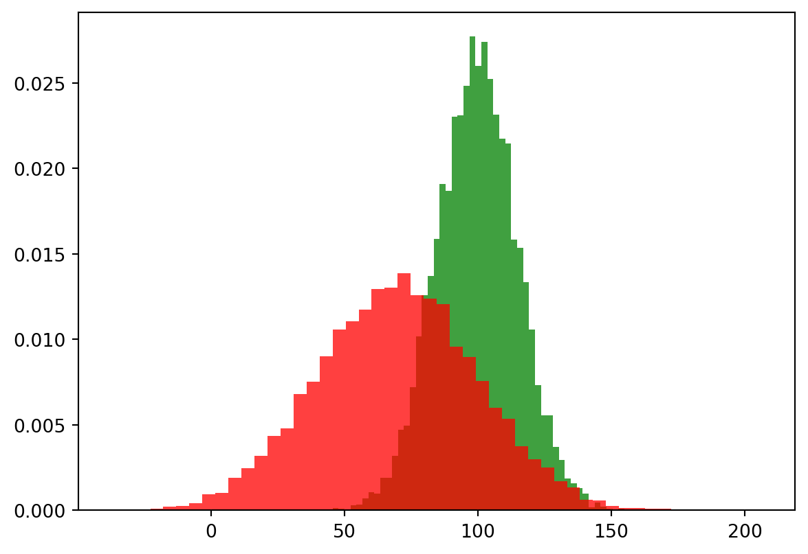
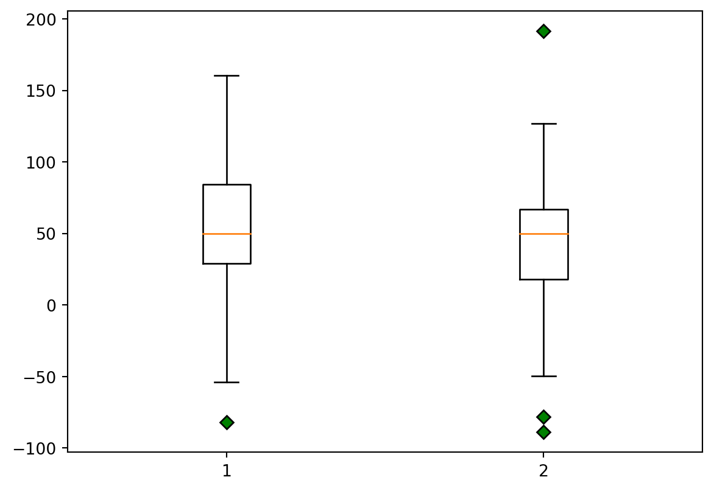

import matplotlib.pyplot as plt5 Visualization
The main reference for this Chapter is [1].
5.1 matplotlib.pyplot
matplotlib is a modern and classic plot library. Its main features are inspired by MATLAB. In this book we mostly use pyplot package from matplotlib. We use the following import convention:
5.1.1 matplotlib interface
matplotlib has two major application interfaces, or styles of using the library:
- An explicit
Axesinterface that uses methods on aFigureorAxesobject to create other Artists, and build a visualization step by step. You may treat thisFigureobject as a canvas, andAxesas plots on a canvas. There might be one or more plots on one canvas. This has also been called an object-oriented interface. - An implicit
pyplotinterface that keeps track of the lastFigureandAxescreated, and adds Artists to the object it thinks the user wants.
Here is an example of an explicit interface.
fig = plt.figure()
ax = fig.subplots()
ax.plot([1, 2, 3, 4], [0, 0.5, 1, 0.2])
Here is an example of an implicit interface.
plt.plot([1, 2, 3, 4], [0, 0.5, 1, 0.2])
Note
If the plot is not shown, you may want to type plt.show() to force the plot being rendered. However, to make plt.show() work is related to switching matplotlib backends, and is sometimes very complicated.
The purpose to explicitly use fig and ax is to have more control over the configurations. The first important configuration is subplots.
.subplot().subplots().add_subplot()
Please see the following examples.
Example 5.1
plt.subplot(1, 2, 1)
plt.plot([1, 2, 3], [0, 0.5, 0.2])
Example 5.2
plt.subplot(1, 2, 1)
plt.plot([1, 2, 3], [0, 0.5, 0.2])
plt.subplot(1, 2, 2)
plt.plot([3, 2, 1], [0, 0.5, 0.2])
Example 5.3
fig, axs = plt.subplots(1, 2)
axs[0].plot([1, 2, 3], [0, 0.5, 0.2])
axs[1].plot([3, 2, 1], [0, 0.5, 0.2])
Example 5.4
import numpy as np
fig = plt.figure()
ax1 = fig.add_subplot(2, 2, 1)
ax2 = fig.add_subplot(2, 2, 3)
ax3 = fig.add_subplot(1, 2, 2)
ax3.plot([1, 2, 3], [0, 0.5, 0.2])The auguments 2, 2, 1 means that we split the figure into a 2x2 grid and the axis ax1 is in the 1st position. The rest is understood in the same way.
Example 5.5 If you don’t explicitly initialize fig and ax, you may use plt.gcf() and plt.gca() to get the handles for further operations.
plt.subplot(1, 2, 1)
ax = plt.gca()
ax.plot([1, 2, 3], [0, 0.5, 0.2])
plt.subplot(1, 2, 2)
ax = plt.gca()
ax.plot([3, 2, 1], [0, 0.5, 0.2])The purpose to explicitly use fig and ax is to have more control over the configurations. For example, when generate a figure object, we may use figsize=(3, 3) as an option to set the figure size to be 3x3. dpi is another commonly modified option.
fig = plt.figure(figsize=(2, 2), dpi=50)
plt.plot([1, 2, 3], [0, 0.5, 0.2])If you would like to change this setting later, you may use the following command before plotting.
fig.set_size_inches(10, 10)
fig.set_dpi(300)
plt.plot([1, 2, 3], [0, 0.5, 0.2])You may use fig.savefig('filename.png') to save the image into a file.
5.1.2 Downstream packages
There are multiple packages depending on matplotlib to provide plotting. For example, you may directly plot from a Pandas DataFrame or a Pandas Series.
Example 5.6
import pandas as pd
import numpy as np
s = pd.Series(np.random.randn(10).cumsum(), index=np.arange(0, 100, 10))
s.plot()<AxesSubplot:>
df = pd.DataFrame(np.random.randn(10, 4).cumsum(0),
columns=['A', 'B', 'C', 'D'],
index=np.arange(0, 100, 10))
df.plot()<AxesSubplot:>
5.1.3 plotting
5.1.3.1 plt.plot()
This is the command for line plotting. You may use linestyle='--' and color='g' to control the line style and color. The style can be shortened as g--.
Here is a list of commonly used linestyles and colors.
- line styles
solidor-dashedor--dashdotor-.dottedor:
- marker styles
oas circle markers+as plusses^as trianglessas squares
- colors
bas bluegas greenras redkas blackwas white
The input of plt.plot() is two lists x and y. If there is only one list inputed, that one will be recognized as y and the index of elements of y will be used as the dafault x.
Example 5.7
from numpy.random import randn
plt.plot(randn(30).cumsum(), color='r', linestyle='--', marker='o')
5.1.3.2 plt.bar() and plt.barh()
The two commands make vertical and horizontal bar plots, respectively. ::: {#exm-}
import pandas as pd
data = pd.Series(np.random.rand(16), index=list('abcdefghijklmnop'))
fig, axes = plt.subplots(2, 1)
axes[0].bar(x=data.index, height=data, color='k', alpha=0.7)
axes[1].barh(y=data.index, width=data, color='b', alpha=0.7)<BarContainer object of 16 artists>
We may also directly plot the bar plot from the Series.
fig, axes = plt.subplots(2, 1)
data.plot.bar(ax=axes[0], color='k', alpha=0.7)
data.plot.barh(ax=axes[1], color='b', alpha=0.7)<AxesSubplot:>
:::
With a DataFrame, bar plots group the values in each row together in a group in bars. This is easier if we directly plot from the DataFrame.
Example 5.8
df = pd.DataFrame(np.random.rand(6, 4),
index=['one', 'two', 'three', 'four', 'five', 'six'],
columns=pd.Index(['A', 'B', 'C', 'D'], name='Genus'))
df| Genus | A | B | C | D |
|---|---|---|---|---|
| one | 0.322152 | 0.253184 | 0.592631 | 0.661351 |
| two | 0.271424 | 0.581918 | 0.145184 | 0.978443 |
| three | 0.252195 | 0.067586 | 0.279678 | 0.710922 |
| four | 0.019392 | 0.864917 | 0.820287 | 0.577325 |
| five | 0.334084 | 0.061098 | 0.332856 | 0.103706 |
| six | 0.035120 | 0.058327 | 0.284048 | 0.351034 |
df.plot.bar()<AxesSubplot:>df.plot.barh(stacked=True, alpha=0.5)<AxesSubplot:>
5.1.3.3 plt.scatter()
Example 5.9
import numpy as np
N = 100
data = 0.9 * np.random.rand(N, 2)
area = (20 * np.random.rand(N))**2
c = np.sqrt(area)
plt.scatter(data[:, 0], data[:, 1], s=area, marker='^', c=c)<matplotlib.collections.PathCollection at 0x216b3b458b0>
5.1.3.4 plt.hist()
Here are two plots with build-in statistics. The plot command will have statistics as outputs. To disable it we could send the outputs to a temporary variable _. ::: {#exm-}
mu, sigma = 100, 15
x = mu + sigma * np.random.randn(10000)
y = mu-30 + sigma*2 * np.random.randn(10000)
_ = plt.hist(x, 50, density=True, facecolor='g', alpha=0.75)
_ = plt.hist(y, 50, density=True, facecolor='r', alpha=0.75)
:::
5.1.4 plt.boxplot()
Example 5.10
spread = np.random.rand(50) * 100
center = np.ones(30) * 50
flier_high = np.random.rand(10) * 100 + 100
flier_low = np.random.rand(10) * -100
data = np.concatenate((spread, center, flier_high, flier_low)).reshape(50, 2)
_ = plt.boxplot(data, flierprops={'markerfacecolor': 'g', 'marker': 'D'})
5.1.5 Titles, labels and legends
pltmethodsxlim(),ylim(),xticks(),yticks(),xticklabels(),yticklabels()- all the above with arguments
axmethodsget_xlim(),get_ylim(), etc..set_xlim(),set_ylim(), etc..
plt.title(label),plt.xlabel(label),plt.ylabel(label)will set the title/xlabel/ylabel.ax.set_title(label),ax.set_xlabel(label),ax.set_ylabel(label)will do the same thing.
5.1.6 Annotations
5.1.7 Configurations
5.2 seaborn
There are some new libraries built upon matplotlib, and seaborn is one of them. seaborn is for statistical graphics. It also modifies the default matplotlib color schemes and plot styles to improve readability and aesthetics. Even if you do not use the seaborn API, you may prefer to import seaborn as a simple way to improve the visual aesthetics of general matplotlib plots.